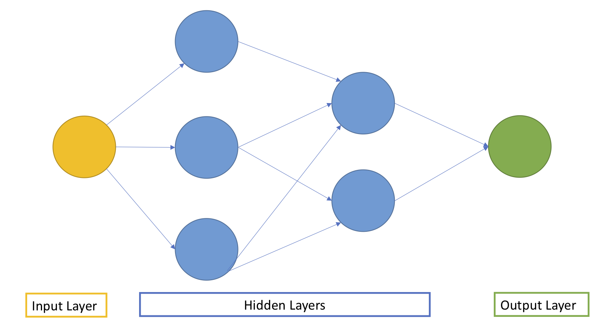

CLICK HERE TO OPEN THE JUPYTER NOTEBOOK
In the linked notebook, I implemented a deep NN using Tensorflow to classify mini-figures from the Marvel World, Harry Potter, Star Wars and Jurassic World. Implementation of the Neural Network together with the results can be found in the link above. Below is a short primer on deep neural networks and a list of references used to write the
A Primer on Deep Neural Networks
A Neural Network (NN) is a deep learning algorithm inspired by the structure of neurons in the human brain. Like the neurons in the human brain signal to each other to allow us to perform any activity, in a NN neurons, so-called nodes, signal to each other to allow the network to perform a task. In this example the task consists in classifying Lego characters from a set of pictures.
A NN is usually comprised of an input layer, one or more hidden layers and an output layer. The picture below shows an example of a simple NN with two hidden layers:

In each layer, nodes receive the signal from one or more of the nodes in the previous layers, perform different a series of calculations, and send the output of these calculations to nodes in the subsequent layers. The calculation performed within each node involves estimating a set of weights which will help us understanding how much of the signal needs to be pushed from one node to the next one. Weights are essential. At each iteration the NN learns by adjusting these weights!
How does a neural network learns?
In other words, how can a NN classify each Lego mini-figure?
Step 1: Forward Pass. Impute the data, initialize the weights, and push the signal from the input layer to the output layer through the hidden layers.
Step 2: The Cost Function. Once the forward pass is over, the NN outputs its prediction for each image. In this step we need to choose a metric (i.e., a cost function) and evaluate how close/far we are from the truth. For instance, in the Lego classification problem we should ask ourselves the question: how many pictures were correctly classifies by the NN? The aim of the NN is to minimise this user-defined metric.
Step 3: Backpropagation. After computing the error in step 2, the NN moves backwards from the output to the input layer going through the hidden layers. This is the step where the NN is actually learning something! The main idea is to combine the chain rule (yes, the chain rule when learned we studying derivatives) with an optimisation algorithm such as gradient descent to change the weights for each neuron in order to minimise the metric from Step 2.
Step 4: Keep Going. Repeat step 1 to 3 until the weights in each neuron do not change anymore (or change really really little).
Why has the world used NN in the last 15 years only?
The number of parameters we need to estimate is HUGE!! Each node has its own set of weights, so the more layers a network has, the higher is the number of weights we need to estimate. This created a computational problem: while the theory of NN has been around for the long time, the computational capabilities needed to train a NN are recent.
Reference
[1] IBM Webpage
[2] When were Lego first manufactured?